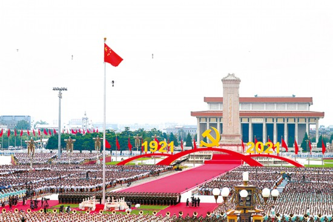

党的十八大以来，中国特色社会主义进入新时代，以习近平同志为核心的党中央领导全党全军全国各族人民砥砺前行，解决了许多长期想解决而没有解决的难题，办成了许多过去想办而没有办成的大事，党和国家事业取得历史性成就、发生历史性变革。即日起，本网开设“在习近平新时代中国特色社会主义思想指引下·奋进新征程 建功新时代”栏目，生动展现新时代党的创新理论扎根中国大地、引领时代变革的思想伟力，全面展示新时代的变革性实践、突破性进展、标志性成果，充分反映中国人民踔厉奋发、笃行不怠的精神风貌，以实际行动迎接党的二十大胜利召开。

2021年7月1日上午，庆祝中国共产党成立100周年大会在北京天安门广场隆重举行。新华社记者 兰红光 摄
立春日，鸟巢夜。北京第二十四届冬季奥林匹克运动会开幕式上，伴随着《我和我的祖国》悠扬乐声，176名来自全国各行各业以及56个民族的代表分列两排，一面国旗手手传递。
国歌声中，五星红旗徐徐升起，高高飘扬在新冠肺炎疫情发生以来首次如期举办的全球综合性体育盛会上，奋进的中国与古老的奥林匹克再度携手前行。旗帜上，四颗小星环拱着一颗大星，象征着亿万人民心向中国共产党，向世人昭示着：中国共产党的领导是历史和人民的选择。
冬奥之约，中国之诺。从申办到筹办，习近平总书记亲自关怀、亲自推动，提出绿色办奥、共享办奥、开放办奥、廉洁办奥的办奥理念，为筹办工作确立总原则、指明总方向；提出“简约、安全、精彩”的办赛要求，明确“申办冬奥会的最大目的，就是在3亿人中推广普及冰雪运动”；先后5次实地考察筹办情况，亲临现场把脉问诊，进行指导……
“世界期待中国，中国做好了准备。”面对百年变局和世纪疫情交织的挑战，在以习近平同志为核心的党中央坚强领导下，中国迎难而上、众志成城，如期点燃冰雪运动火炬。如今，冬奥赛程已经进入尾声，赛事组织、赛会服务、场馆运行、疫情防控等受到各方点赞，中国共产党非凡的治理效能和制度优势得以充分彰显。
从百年前的“奥运三问”到如今的“双奥之城”，历史和实践充分证明：没有中国共产党，就没有新中国，就没有中华民族伟大复兴。
党的十八大以来，习近平总书记亲自谋划、亲自部署、亲自推动坚持和加强党的全面领导，新时代党的领导得到全面加强，党中央权威和集中统一领导得到有力保证，党的领导制度体系不断完善，党的领导方式更加科学，全党思想上更加统一、政治上更加团结、行动上更加一致，党的政治领导力、思想引领力、群众组织力、社会号召力显著增强，为新时代推进中国特色社会主义伟大事业提供了根本保证。
——中国共产党领导是中国特色社会主义最本质的特征，党政军民学，东西南北中，党是领导一切的，是最高的政治领导力量
2022年1月6日，中共中央政治局常委会全天召开会议，听取全国人大常委会、国务院、全国政协、最高人民法院、最高人民检察院党组工作汇报和中央书记处工作报告。
2015年以来，党中央每年都要听取五大班子党组的工作汇报和中央书记处工作报告，这项工作已写入党内法规，成为加强和维护党中央集中统一领导的重要制度性安排。
党的领导权是马克思主义建党学说的重大课题。曾有一个时期，党内存在不少对坚持党的领导认识模糊、行动乏力和落实党的领导弱化、虚化、淡化、边缘化问题。
中国特色社会主义进入新时代，以习近平同志为核心的党中央深刻认识到，坚持和加强党的全面领导，关系党和国家前途命运，我们的全部事业都建立在这个基础之上，在这个问题上决不能犯颠覆性错误。
“中国共产党是中国特色社会主义事业的领导核心，所以必须加强和改善党的领导，充分发挥党总揽全局、协调各方的领导核心作用。”2012年11月17日，习近平总书记在十八届中央政治局第一次集体学习时正本清源、一锤定音。
对党的领导的性质、定位、作用，对坚持和加强党的全面领导，习近平总书记每句话都讲得理直气壮——
“在坚持党的领导这个重大原则问题上，我们脑子要特别清醒、眼睛要特别明亮、立场要特别坚定，绝不能有任何含糊和动摇”；
“中国最大的国情就是中国共产党的领导。什么是中国特色？这就是中国特色”；
“党政军民学，东西南北中，党是领导一切的，是最高的政治领导力量”；
……
2017年10月，习近平总书记在党的十九大报告中提出新时代党的建设总要求，头一条就是“坚持和加强党的全面领导”。不仅要“坚持”，还要“加强”；不仅要“领导”，还要“全面领导”。
围绕坚持和加强党的全面领导，党中央作出一系列重大政治安排——
党的十九大将“中国共产党的领导是中国特色社会主义最本质的特征，是中国特色社会主义制度的最大优势”写入党章总纲，并把“坚持党对一切工作的领导”列在新时代中国特色社会主义基本方略“十四个坚持”的第一条；
2018年3月，十三届全国人大一次会议审议通过宪法修正案，把“中国共产党领导是中国特色社会主义最本质的特征”载入宪法总纲；
2019年10月，党的十九届四中全会把“坚持党的集中统一领导”列为我国国家制度和国家治理体系的第一个显著优势，并就坚持和完善党的领导制度体系作出部署；
以加强党的全面领导为重要原则，深化党和国家机构改革，调整重组优化数十个部门，党和国家组织结构和管理体制实现系统性、整体性重构；
在事关民族复兴的重要领域，党中央都组建顶层机构，习近平总书记亲自担任全面深化改革、全面依法治国、财经、外事、国安、网信等一系列机构负责人，全面加强党对重大工作的领导……
2021年11月，党的十九届六中全会审议通过《中共中央关于党的百年奋斗重大成就和历史经验的决议》，将党的领导置于习近平新时代中国特色社会主义思想“十个明确”之首，作为打头、管总的一条，深刻揭示党的领导与中国特色社会主义的相互关系，标志着我们党对马克思主义建党学说和社会主义发展规律的认识达到新的高度。
补短板、强弱项、固根本。通过一系列重大政治安排，党在中国特色社会主义事业中的领导核心地位更加明确，全党全国各族人民心中党的领导意识日益强化；党的领导贯彻和融入到各领域各方面工作之中，推动党的领导制度纵到底、横到边，落实落地；党的领导方式日臻健全、更加科学，推动党的领导不断加强和改善。
如身使臂、如臂使指，党中央坐镇中军帐，国家治理体系的各个子系统各就其位、各司其职、各尽其责、有序协同，保证中央和地方各级政令统一、运行顺畅、执行高效、充满活力，国家治理能力和治理水平得到全面提升。
——把坚持党中央权威和集中统一领导作为党的领导的最高原则，明确“两个确立”的决定性意义，推动全党做到“两个维护”
一个国家、一个政党，领导核心至关重要。
“党确立习近平同志党中央的核心、全党的核心地位，确立习近平新时代中国特色社会主义思想的指导地位，反映了全党全军全国各族人民共同心愿，对新时代党和国家事业发展、对推进中华民族伟大复兴历史进程具有决定性意义。”党的十九届六中全会以历史决议形式作出重大政治论断，号召全党全军全国各族人民更加紧密地团结在以习近平同志为核心的党中央周围。
在此之前，2016年10月，党的十八届六中全会正式确立习近平总书记党中央的核心、全党的核心地位，写入党的全会文件；次年，党的十九大又将其载入党章。
船重千钧，掌舵一人。党的十八大以来，习近平总书记以“我将无我，不负人民”的使命担当，引领中国号巨轮涉险滩、战恶浪，推动党和国家事业取得历史性成就、发生历史性变革，成为众望所归、当之无愧的党的核心、人民领袖、军队统帅。
大战大考炼真金。
己亥之末，庚子之初，新冠肺炎疫情突如其来。
面对百年来全球最严重的传染病大流行，习近平总书记亲自指挥、亲自部署，党中央统揽全局、运筹帷幄，中央政治局常委会、中央政治局召开21次会议研究决策，领导组织党政军民学、东西南北中大会战，全国迅速形成统一指挥、全面部署、立体防控的战略布局。
红旗漫卷，淬火成钢。中国战疫取得的成效,彰显了中国共产党领导和中国特色社会主义制度的显著优势。在这场大考中，党中央坚强领导的“定海神针”作用充分体现，习近平新时代中国特色社会主义思想的真理伟力充分彰显。“中方行动速度之快、规模之大，世所罕见”，世界卫生组织总干事谭德塞考察中国防疫举措后感叹。
经此一役，全党全国各族人民更加深刻感悟到习近平总书记领航掌舵、举旗定向的雄韬伟略，感悟到党总揽全局、协调各方的领导核心作用，感悟到风雨袭来时，党的坚强领导、党中央的权威是最坚实的靠山。
山雄有脊，房固赖梁。
春节前后，河北省阜平县顾家台村后山，生态护林员顾成虎每日漫步山间，巡防山火。“我家以前住的是两间土坯房，现在变成了宽敞明亮的新民居。这都是总书记带来的好日子。”
“我们不能一边宣布实现了全面建成小康社会目标，另一边还有几千万人口生活在扶贫标准线以下。”2013年元旦前，习近平总书记踏雪走进顾成虎家破旧的土坯房看真贫。此后，一场前所未有的脱贫攻坚战全面打响。
习近平总书记亲自上阵，50多次调研扶贫工作，足迹遍及14个集中连片特困地区，翻山越岭到20多个贫困村访贫问苦；提出精准扶贫精准脱贫方略，“六个精准”“五个一批”“两不愁三保障”始终指引脱贫攻坚战的方向。
一声令下，尽锐出战。25.5万个驻村工作队、300多万名第一书记和驻村干部，同近200万名乡镇干部和数百万村干部冲锋陷阵，充分发挥战斗堡垒作用和先锋模范作用，带领群众攻克一个个贫中之贫、坚中之坚。8年间，近1亿人脱贫，832个贫困县摘帽，12.8万个贫困村出列，脱贫攻坚取得了重大历史性成就。
脱贫后，江西井冈山白银湖村村民邱冬华贴上这样一副对联——“脱贫全靠惠民策、致富迎来幸福春”，横批：“共产党万岁”。朴素的话语道出一个真理：只有在中国特色社会主义制度下，脱贫攻坚才能取得全面胜利；只有在党的领导下，我们才能创造出世界上任何政治力量都不可能创造的人间奇迹。
万山磅礴看主峰。中国特色社会主义进入新时代，党中央明确“坚持和加强党的全面领导首先是坚持党中央权威和集中统一领导”，并将其作为党的领导的最高原则，推动全党深化对“两个确立”决定性意义的认识，自觉做到“两个维护”。
着眼于坚持和加强党中央集中统一领导，党中央制定或修订了关于新形势下党内政治生活的若干准则、中共中央政治局关于加强和维护党中央集中统一领导的若干规定、中央委员会工作条例、重大事项请示报告条例等一系列党内法规，为维护党中央权威和集中统一领导提供遵循；
严明党的政治纪律和政治规矩，及时发现、着力解决“七个有之”问题，发展积极健康的党内政治文化，推动营造风清气正的良好政治生态；
坚持民主集中制，建立健全党对重大工作的领导体制，强化党中央决策议事协调机构职能作用，完善推动党中央重大决策落实机制，严格执行向党中央请示报告制度；
强化政治监督，深化政治巡视，查处违背党的路线方针政策、破坏党的集中统一领导问题，清除“两面人”，保证全党在政治立场、政治方向、政治原则、政治道路上同党中央保持高度一致……
通过推出一系列基础性、创制性、战略性举措，党中央权威和集中统一领导得到有力保证。置身中国特色社会主义新时代，全党更加深刻认识到“两个确立”决定道路方向、事业成败、党的兴衰，决定国家和民族的前途命运，从而在“两个维护”上更加坚定、更加自觉、更加执着、更加真挚。
——坚定不移全面从严治党，党在革命性锻造中更加坚强有力，推动党和国家事业取得历史性成就、发生历史性变革
先进的马克思主义政党不是天生的，而是在不断自我革命中淬炼而成的。
“党的十八大以来，全面从严治党取得了历史性、开创性成就，产生了全方位、深层次影响，必须长期坚持、不断前进。”2022年1月18日，在十九届中央纪委六次全会上，习近平总书记明确要求，坚持严的主基调不动摇，坚持不懈把全面从严治党向纵深推进。
坚持和加强党的全面领导，必须全面从严治党，把党建设得更加坚强有力，让党的领导更加适应实践、时代、人民的要求。
“全党必须警醒起来。打铁还需自身硬。”2012年11月15日，十八届中央政治局常委首次亮相，面对500多名中外记者，习近平总书记话语铿锵。
党的十八大以来，习近平总书记亲自谋划、亲自部署、亲自推动，全党以自我革命精神推进全面从严治党。从2014年12月明确提出全面从严治党，将其纳入“四个全面”战略布局，到党的十八届六中全会专题研究全面从严治党问题；从党的十九大提出新时代党的建设总要求，将“全面从严治党”写入党章，到党的十九届四中全会对全面从严治党制度建设作出重大部署，再到党的十九届六中全会系统总结新时代全面从严治党成就和经验……全面从严治党的战略方针日益明确，指引全面从严治党实践向纵深发展，不断开辟管党治党新境界。
进入新时代，党中央完善全面从严治党制度，颁布实施党委（党组）落实全面从严治党主体责任规定，加强党的领导和监督，将全面从严的要求贯穿于管党治党全过程各方面——
把党的政治建设纳入新时代党的建设总体布局并作为根本性、统领性建设，把保证全党服从中央、维护党中央权威和集中统一领导作为党的政治建设的首要任务，坚定不移推进全面从严治党；
持续推进纪律建设，两次修订纪律处分条例，形成六大纪律体系，以严明的纪律管全党治全党，有效运用“四种形态”，由“惩治极少数”向“管住大多数”拓展；
抓“舌尖上的浪费”“车轮上的铺张”“月饼盒里的不正之风”，全党驰而不息纠“四风”，中央纪委国家监委连续100个月通报查处违反中央八项规定精神问题的情况，作风建设金色名片越擦越亮；
坚定不移“打虎”“拍蝇”“猎狐”，一体推进不敢腐、不能腐、不想腐，取得反腐败斗争压倒性胜利并全面巩固。党的十八大以来，至2021年10月，全国纪检监察机关共立案407.8万件、437.9万人，给予党纪政务处分399.8万人，其中立案审查调查中管干部484人……
十年磨一剑。
经过坚决斗争，全面从严治党的政治引领和政治保障作用充分发挥，党的自我净化、自我完善、自我革新、自我提高能力显著增强，管党治党宽松软状况得到根本扭转，党在革命性锻造中更加坚强，也让坚持和加强党的全面领导更有底气、更有自信。
全面建成小康社会，乘势而上开启全面建设社会主义现代化国家新征程；连续两年国内生产总值超过100万亿元人民币，人均GDP接近高收入国家门槛；全球最大社会保障网进一步织密，主要健康指标居中高收入国家前列……
党的十八大以来，正是因为毫不动摇坚持和加强党的全面领导，坚决维护党的核心和党中央权威，充分发挥党的领导政治优势，把党的领导落实到党和国家事业各领域各方面各环节，我们才团结全党全军全国各族人民拧成一股绳，解决了许多长期想解决而没有解决的难题，办成了许多过去想办而没有办成的大事，推动党和国家事业取得历史性成就、发生历史性变革，让党的面貌、国家的面貌、人民的面貌、军队的面貌、中华民族的面貌发生了前所未有的变化。
踏过烟云万千重，砥柱人间是此峰。历史已经并将继续证明，党的全面领导是战胜一切艰难险阻的“定海神针”，是创造中国奇迹的核心密码。当前，我国正处在实现中华民族伟大复兴的关键时期，世界百年未有之大变局加速演进，改革发展稳定任务艰巨繁重，前进道路上仍然存在可以预料和难以预料的各种风险挑战。越是任务艰巨，越是艰难险阻，越要坚持和加强党的全面领导，以咬定青山不放松的执着奋力实现既定目标，以行百里者半九十的清醒不懈推进中华民族伟大复兴。
今年将召开党的二十大，这是党和国家政治生活中的一件大事。新时代新征程上，必须坚持和加强党的全面领导不动摇，以永远在路上的执着把全面从严治党引向深入，保持平稳健康的经济环境、国泰民安的社会环境、风清气正的政治环境，迎接党的二十大胜利召开。